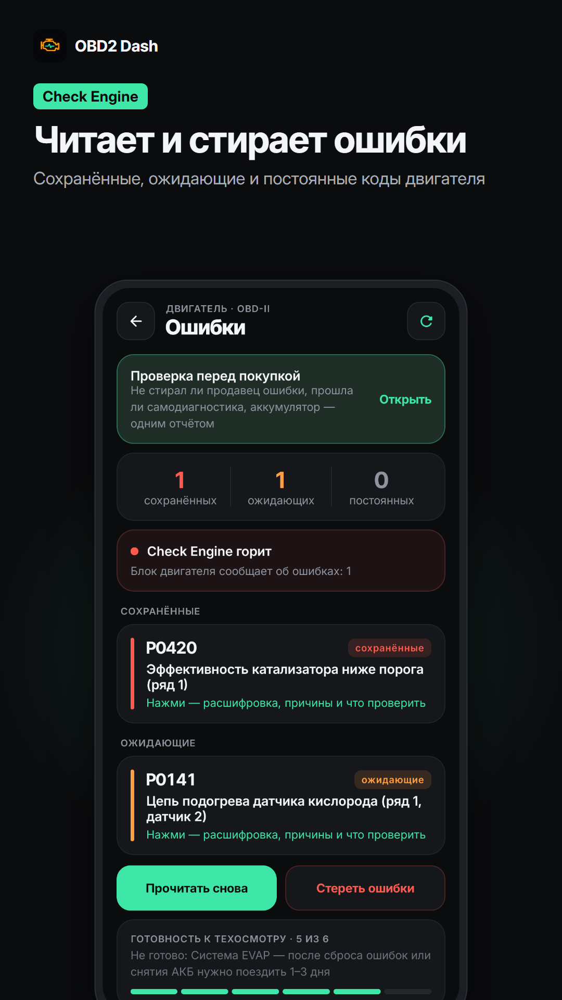
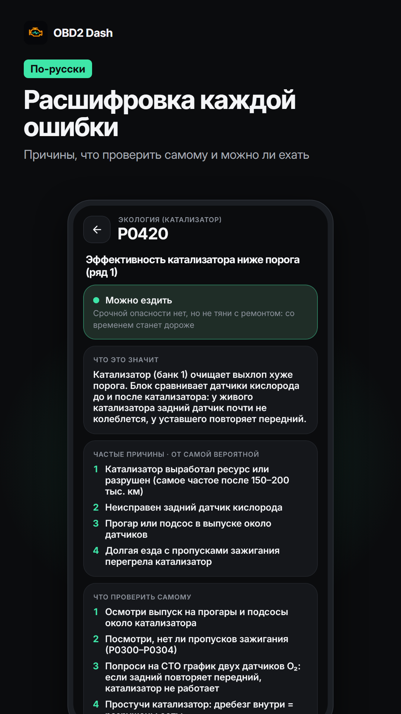
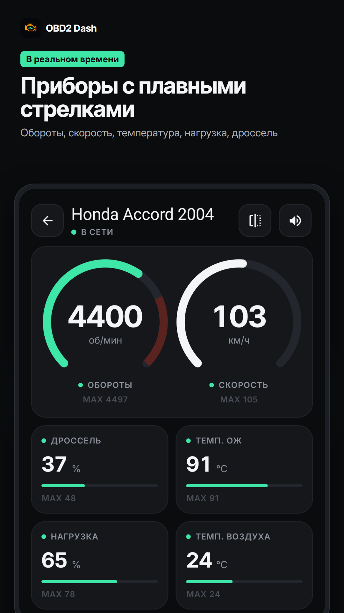
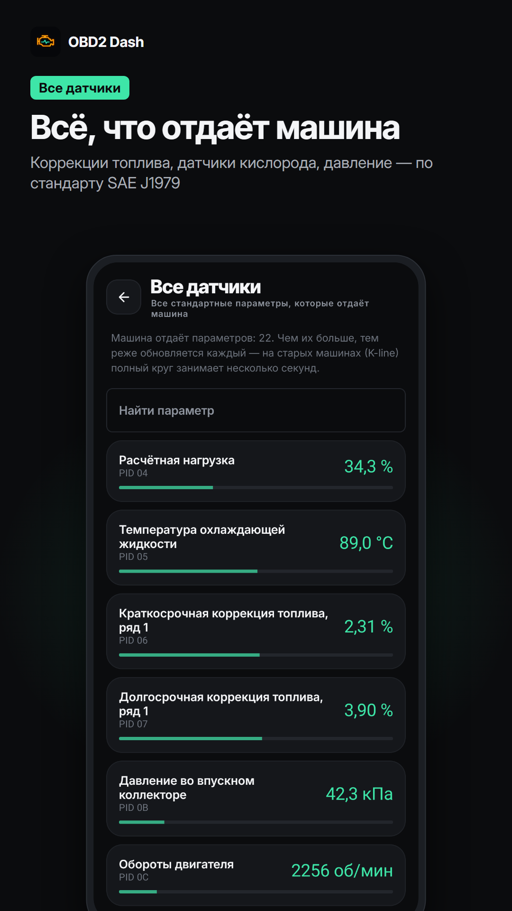

Почему горит Check Engine — и можно ли ехать дальше
Автосканер для Android. Вставь адаптер ELM327 в разъём OBD-II под рулём — приложение прочитает ошибки, расшифрует их по-русски и покажет, что с машиной прямо сейчас.




Бесплатно — и так останется
- Чтение и сброс ошибок двигателя с расшифровкой: что сломалось, насколько срочно, что делать
- Приборы в реальном времени и все стандартные датчики машины
- Расход топлива, поездки на карте, замер разгона 0–100
- Гараж, пробег и напоминания о ТО
- Проверка машины перед покупкой б/у — 5 чужих машин
- Адаптеры Bluetooth, Bluetooth LE, Wi-Fi и USB
Всё это работает для одной машины без оплаты и без рекламы.
PRO — одна покупка, навсегда
- 2 машины в гараже — бесплатно 1
- Проверка чужих машин без ограничений — бесплатно 5
- Бортовые тесты: катализатор, датчики кислорода, пропуски зажигания — значение рядом с заводским пределом
- Анализ смеси по коррекциям топлива: бедно или богато и где искать причину
- Полный стоп-кадр: все параметры, которые машина сохранила в момент ошибки
- Паспорт блоков управления и признаки перепрошивки
- Ошибки и сброс ABS, подушек, коробки (машины с шиной CAN)
- Свои датчики, импорт PID из Torque и параметры конкретных моделей
- Скоро, без доплаты: свои панели приборов, сервисные функции по маркам, Android Auto
Бесплатно и PRO
| Бесплатно | PRO | |
|---|---|---|
| Ошибки, приборы, поездки, ТО, разгон | ✓ | ✓ |
| PRO-инструменты диагностики | — | ✓ |
| Машин в гараже | 1 | 2 + по 79 ₽ |
| Проверка чужих машин | 5 | без ограничений |
| Цена | 0 ₽ | 399 ₽ один раз |
Цены в рублях. НДС не облагается: продавец — плательщик налога на профессиональный доход.
Как купить
- Нажми «Купить PRO»в приложении, в разделе «PRO и тарифы».
- Укажи почту— туда придёт чек, и по ней же покупка восстановится на новом телефоне.
- Оплати на странице ЮKassaкартой или через СБП. Данные карты приложению не передаются.
- Вернись в приложение— PRO откроется сам, обычно за несколько секунд.
Доставки нет — покупка цифровая. Подробные условия — в оферте.
Частые вопросы
Что будет бесплатно всегда?
Всё, что было в приложении до PRO, для одной машины: ошибки и их сброс, приборы, датчики, поездки, расход, ТО, разгон, проверка перед покупкой. Это не станет платным.
Можно попробовать PRO до покупки?
Да. В приложении есть демо-режим: отключись от машины и нажми «Демо» — все PRO-инструменты откроются на примере.
Это подписка?
Нет. PRO оплачивается один раз и остаётся навсегда. Новые PRO-инструменты приходят с обновлениями без доплаты.
Новый телефон — покупка пропадёт?
Нет. В «PRO и тарифы» нажми «Восстановить покупки» и укажи почту, которую вводил при оплате. Одновременно — до 3 устройств.
PRO не заработал с моей машиной
Напиши в течение 14 дней после оплаты — вернём деньги полностью. Почта — на странице контактов.
Какой нужен адаптер?
Любой ELM327: Bluetooth, Bluetooth LE (Vgate iCar Pro, Veepeak, OBDLink CX), Wi-Fi или USB. Машина — с разъёмом OBD-II, обычно это бензиновые с 2001 года и дизельные с 2004-го.